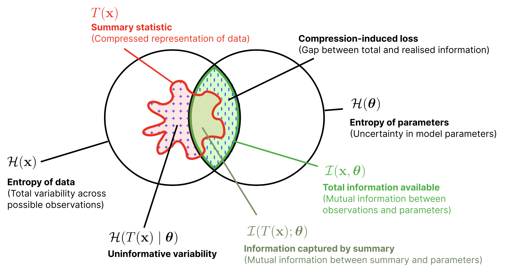

Machine Learning for Astroparticle Physics:
A Crash-course in SBI
Lecture 5a - Rank-based diagnostics and failure modes
Christoph Weniger — University of Amsterdam (GRAPPA)
Where can our inference go wrong?
A taxonomy of epistemic uncertainties in SBI: three failure modes, each with its own diagnostic strategy.

| Category | Type | Description |
|---|---|---|
| Epistemic | Type A | Misspecified model "I'm simulating the wrong world" |
| Type B | Lossy summary "I'm discarding relevant information" |
|
| Type C | Inexact inference "I can't compute the posterior exactly" |
|
| Aleatoric | — | Irreducible randomness in the data |
Information Content: A Venn Diagram View
| Entropy | \[ H(X) = -\sum_x p(x)\log p(x) \] Average uncertainty in \(X\). How many bits does it take to describe a draw from \(p(x)\)? |
| Conditional Entropy | \[ H(X\mid Y) = -\sum_{x,y} p(x,y)\log p(x\mid y) \] Remaining uncertainty in \(X\) after observing \(Y\). |
| Mutual Information | \[ I(X;Y) = H(X) - H(X\mid Y) = \sum_{x,y} p(x,y)\log\frac{p(x,y)}{p(x)p(y)} \] How much knowing \(Y\) reduces uncertainty about \(X\). Zero iff \(X \perp Y\). |
Information Content: A Venn Diagram View

Any deterministic function \(T(x)\) can only destroy — never create — information about \(\theta\).
Equality holds iff \(\theta \perp x \mid T(x)\): the statistic captures everything about \(\theta\).
Compressing \(x \to T(x)\) before SBI can only widen posteriors. The ideal learned summary is a sufficient statistic.
Today's Roadmap
Rank Diagnostics
Forward-backward consistency, SBC, HPDR coverage
Failure Modes & Generalization
Where rank tests are blind, and the unifying framework
Rank Diagnostics
Letting the inference "walk on its own": forward vs backward, judged by ranks.
The forward–backward consistency principle
Compare samples from two joint distributions on \((\theta, x)\), derived from the forward model and the backward model, respectively.
Key observation: If \(q_\phi(\theta\mid x) = p(\theta\mid x)\), the two distributions coincide. Vice versa, any discrepancy flags inference error.
The forward–backward consistency principle
Simulation-based calibration (SBC). Given an observation \(x\sim p(x)\) drawn from the generative model, draw one parameter from the true posterior, \(\theta^* \sim p(\theta\mid x)\), and \(L\) further draws from the learned posterior, \(\theta_{1:L} \sim q_\phi(\theta\mid x)\).
The forward–backward consistency principle
Now, given rank test samples
\[ \theta^* \sim p(\theta),\quad x \sim p(x\mid\theta^*),\quad \theta_{1:L} \sim q_\phi(\theta\mid x) \]we can use some rank statistics arguments to construct a test.
The position (rank) of the true posterior sample \(\theta^*\) among the approximate posterior samples \(\theta_{1:L}\), is given by
\(F(\theta^*) = \tfrac{1}{L}\sum_i \mathbb{1}(\theta_i \le \theta^*)\).
Assuming that \(q_\phi = p\), all \(L+1\) positions are equally likely, and hence we expect:
\[ F(\theta^*) \;\sim\; \text{Uniform}\bigl(\{0, \tfrac{1}{L}, \ldots, 1\}\bigr) \]
What SBC actually does, in one picture
For each of \(N\) simulated experiments we get one rank between \(0\) and \(L\). Aggregate them into a histogram.
- Draw \(\theta^*\) from the prior.
- Run the simulator to get \(x\).
- Draw \(L\) samples \(\theta_{1:L}\) from the learned posterior \(q_\phi(\theta\mid x)\).
- Count how many of the \(\theta_i\) are below \(\theta^*\).
- Repeat \(N\) times; histogram the ranks.
Under \(q_\phi=p\), the histogram is flat; any structure is a calibration signature.
Demo: reading SBC rank histograms
Simulator: \(\theta\sim\mathcal{U}(-1,1)\), \(x\mid\theta\sim\mathcal{N}(\theta, \sigma^2)\) with \(\sigma=0.1\).
Learned posterior:
- Bias \(b\): shifts the mean
- Scale \(s\): \(s<1\) underdispersed; \(s>1\) overdispersed
HPDR coverage: same machinery, different ordering
The highest posterior density region at level \(1-\alpha\):
If \(q_\phi = p\), a fraction \(1-\alpha\) of true parameters \(\theta^*\) should fall inside. Plot empirical vs nominal coverage: the pp-plot.
Equivalently, this is a rank test with ordering function \(q_\phi(\theta\mid x)\):
Demo: reading HPDR rank histograms
Same simulator and learned posterior as before — only the ordering changes.
Now we rank by density \(q_\phi(\theta\mid x)\):
The dots now sit on the orange curve at their density height; the red line marks \(q_\phi(\theta^*\mid x)\). The rank counts the orange dots above the red line.
Demo: SBC vs HPDR, side-by-side
Same Gaussian setup as before; now we look at both diagnostics at once.
Failure Modes & Generalization
Where rank tests stay blind, and the framework that ties them together.
Failure 1: spatially varying bias hides in the average
SBC averages over \(x \sim p(x)\). A bias whose sign changes across data space partially cancels.
Global rank histogram (dashed black) looks nearly flat. Stratify by sign of \(x\) and the opposite biases appear at once.
Lesson: stratify whenever miscalibration could depend on \(x\). The cost is statistical power per stratum.
Failure 2: SBC is blind to information loss
Two observations \(x_1, x_2 \sim \mathcal{N}(\theta, \sigma^2)\). The Bayes-optimal posterior uses both:
Compare two flawed posteriors, both wider than optimal:
- Overdispersed: correct mean, scale \(s>1\)
- Lossy: uses only \(x_1\), \(q = \mathcal{N}(x_1, \sigma^2)\)
Model-based ranks: recovering Type B sensitivity
If we can evaluate the simulator's likelihood \(p(x\mid\theta)\) or score \(\nabla_\theta \log p(x\mid\theta)\), use those as ordering functions instead.
Same rank machinery, ordering function changed. In the lossy-summary case above, the likelihood-rank histogram would no longer be flat.
Requires a tractable model. When you have one, use it — it is the only rank test that sees information loss.
Failure 3: HPDR coverage is blind to shape
HPDR tests check only the mass inside super-level sets. Distorted shapes that preserve mass-vs-level go undetected.
Construct \(q(\theta) = g(|\theta - \theta_0|)\) so every symmetric interval matches the true posterior mass. The pp-plot stays perfectly diagonal, even when the shape is bimodal.
Left: true posterior (dashed) vs distorted \(q\). Right: pp-plot stays on the diagonal regardless of distortion.
Beyond marginals: probing the joint
SBC applied separately to each component \(\theta_i\) tests only the marginals. It can pass while the joint posterior is wrong (correlations distorted).
- Practical recipe: SBC on a random ensemble of projections \(\mathbf{w}^\top\boldsymbol\theta\).
- Cheap (rank-test samples reused), and much more revealing than per-coordinate SBC.
- This is the bridge from SBC to the generalized rank framework: arbitrary ordering functions \(f(\boldsymbol\theta, x)\).
Generalized rank diagnostics: one framework
All forward–backward tests share a structure: choose an ordering function \(f(\boldsymbol\theta, x)\) and rank \(\theta^*\) among the \(\theta_{1:L}\) under that ordering.
| Method | Ranks by | Type B | Ordering \(f(\boldsymbol\theta, x)\) |
|---|---|---|---|
| SBC | parameter (\(d\) tests) | No | \(\theta_i\) for \(i=1,\ldots,d\) |
| HPDR coverage | learned posterior | No | \(q_\phi(\boldsymbol\theta\mid x)\) |
| TARP | distance to reference | Maybe | \(\|\boldsymbol\theta - \boldsymbol\theta'\|^2\), \(\boldsymbol\theta' \sim p(\boldsymbol\theta)\) |
| True HPDR | true posterior | Yes | \(\pi(\boldsymbol\theta\mid x) \propto p(x\mid\boldsymbol\theta)p(\boldsymbol\theta)\) |
| Likelihood ranks | likelihood | Yes | \(p(x\mid\boldsymbol\theta)\) |
| Score ranks | score (\(d\) tests) | Yes | \(\nabla_{\theta_i} \log p(x\mid\boldsymbol\theta)\) |
Building Systems That Work
A clockmaker does not assemble every gear and escapement at once and expect it to tick. Start with the gear train — verify it rotates. Add the escapement, check regulation. Add the pendulum, verify synchronization. At each step, the mechanism works.
SBI pipelines (and anything deep learning related) obey the same law. The diagnostics ahead are designed to pinpoint failures in nearly-working systems. Applied to a completely broken pipeline they generate noise; applied to an incrementally refined system they can tell you exactly what broke.
Building Systems That Work
- Start minimal — toy data, known sufficient statistics, simple network
- Validate thoroughly — SBC, coverage, posterior predictive checks
- Add one component — learned summaries or realistic noise or more parameters; not all at once
- Re-validate — pass → proceed; fail → you know what broke
- Iterate — repeat until full problem complexity
Key Takeaways
- Rank Diagnostics: the uniformity of ranks under \(q_\phi = p\) turns the forward–backward principle into a sharp, distribution-free test. SBC histograms and HPDR pp-plots are two readings of the same machinery.
- Failure Modes: SBC averages over \(x\) and can hide spatially varying bias; SBC and HPDR are blind to information loss; HPDR is blind to shape distortions that preserve mass-vs-level.
- Generalization: all of these are special cases of generalized rank diagnostics with different ordering functions. Model-based ranks (likelihood, score, true HPDR) recover Type B sensitivity when the model is tractable.
- The conceptual jump: no single diagnostic is sufficient. Comprehensive validation means stacking orderings, projections, and stratifications, each closing a different blind spot.
Summary & What's Next
Rank Diagnostics
- FW–BW consistency principle
- SBC rank statistic, flat under \(q_\phi = p\)
- HPDR coverage as a rank test on \(q_\phi(\theta\mid x)\
Failure Modes & Generalization
- Spatial-bias cancellation; stratify
- Type B blindness; recovered by likelihood / score ranks
- HPDR shape-distortion blind spot
- Cramér–Wold completeness over all orderings
Next lecture: robust inference under model misspecification — what to do when Type A bites back.